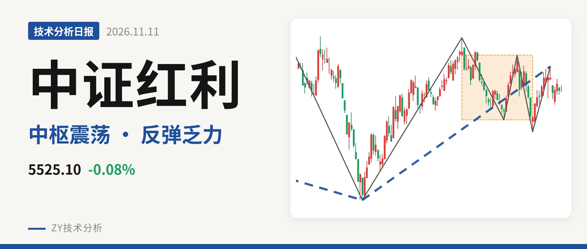
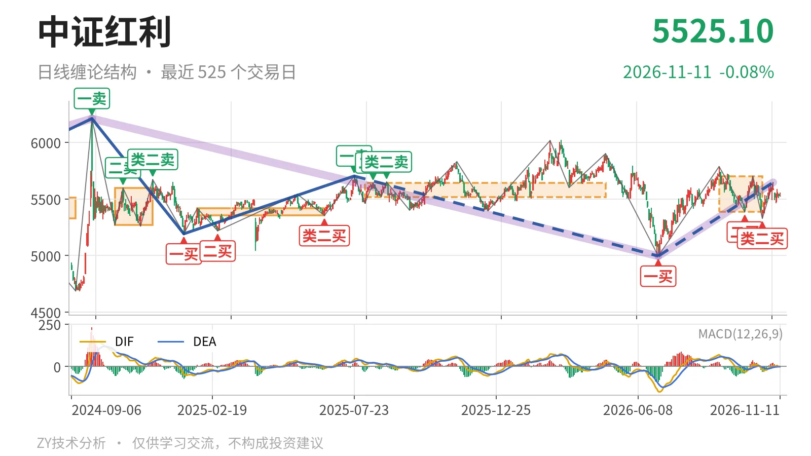

中证红利｜反抽5701点不过，回落中枢内

最近日线中枢 5386.04—5701.06点，收盘位于中枢之内
一句话：反抽5701点未过，日线仍在中枢内震荡
📉 走势结构：6月30日上涨线段未结束，当前处于回落未成笔
日线级别仍处在6月30日一买4995.49点以来的上涨线段中，该线段运行到11月4日高点5646.01点，涨约13.0%，还没有结束。更大级别看，2024年10月8日一卖6209.67点之后的下跌走势也未走完，所以当前上涨线段先理解为更大级别下跌中的回抽。11月4日之后价格回落，最低5460.31点尚未击穿10月23日低点5328.30点，回落一笔还未成笔。

🌀 中枢与位置：最新价落于9月1日中枢内部
最新收盘5525.10点，处在9月1日至10月23日日线笔中枢 5386.04—5701.06点 之内，距下沿约139点，距上沿约176点。该中枢中轴5543.55点，较2025年8月4日至2026年4月30日中枢中轴5579.23点略下移，下沿由5518.46点降到5386.04点。价格没有离开中枢，结构上仍是中枢震荡，而不是单边段。
🧭 买卖点：10月23日类二买后反弹未过前高
最近一个日线笔级别买点是10月23日的类二买，点位5328.30点，所在下跌笔已经结束。该买点之后，10月23日至11月4日上涨笔只推到5646.01点，未越过9月29日至10月14日高点5701.06点，因此没有形成新的日线卖点。6月30日一买4995.49点以来的反弹也未升破2025年7月23日一卖5702.03点，这些日线买点并未因新高而降级。当前回落尚未跌破5328.30点，类二买结构仍然存在。

📊 背驰：反弹笔力度衰减，DIF仍弱
比较同向上涨笔：9月29日至10月14日上涨笔红柱面积85，DIF高点11.1；10月23日至11月4日上涨笔红柱面积65，DIF高点5.7。后者高点5646.01点低于前者5701.06点，谈不上“新高不新强”，而是价格未新高、指标同步走弱。最新MACD的DIF为-0.4，仍在零轴之下，柱值仅1.0。这说明10月23日以来的上涨只是中枢内反弹，尚未扭转更大级别回压。
🎯 关键位置观察：看5701点与5386点方向选择
上方若重新站上 5701点 附近，即最近中枢上沿，6月30日上涨线段才有重新转强的基础；若反抽一直回不到5701点上方，结构上就只是9月1日以来的中枢震荡。下方若跌破 5386点 附近，并且反抽回不到5386点上方，最近中枢会被向下破坏，10月23日类二买 5328.30点 将承受压力。当前日线结构为中性略偏弱，弱在反弹笔红柱面积和DIF高点都低于前一笔，且价格仍未站上中枢中轴5543.55点上方。
⚠️ 本文为基于公开行情数据的缠论技术结构记录，由程序自动计算并生成，仅供学习交流，不构成任何投资建议。市场有风险，投资需谨慎。